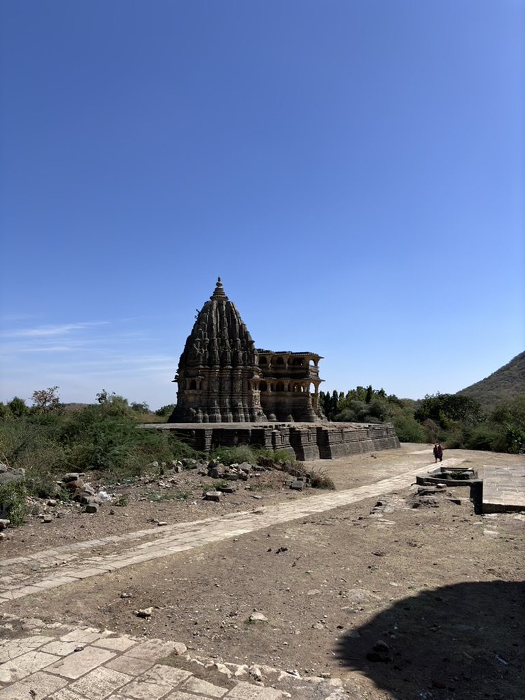
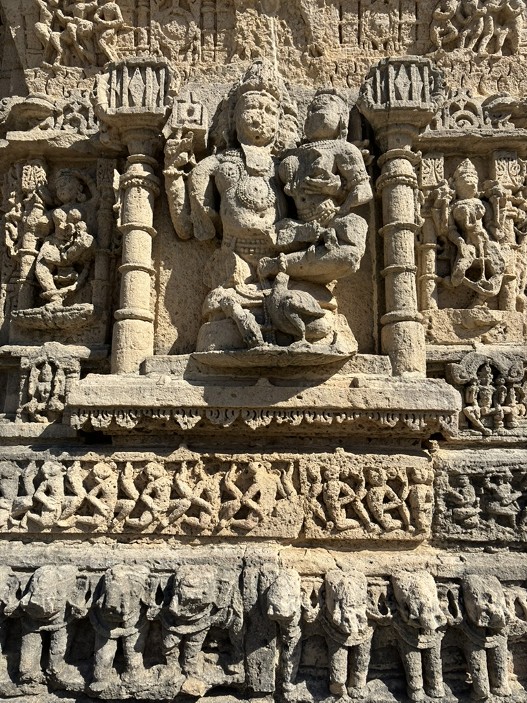
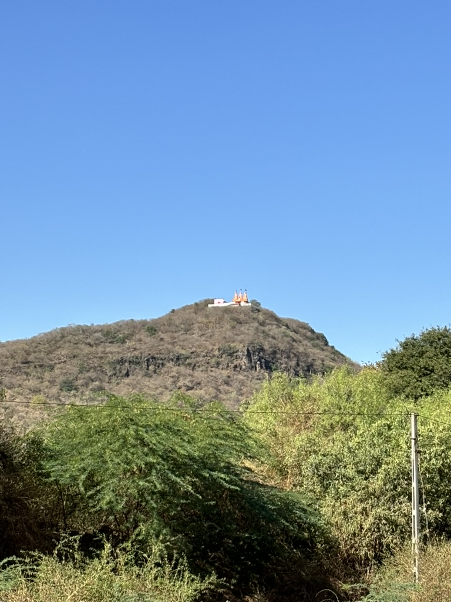

About Barda Hills
Barda Hills is a picturesque hill range located in the Porbandar district of Gujarat, India. It is part of the Barda Wildlife Sanctuary, which spans over 192 square kilometers. The hills are characterized by their lush greenery, rugged terrains, and a mix of deciduous forests, making them a great spot for nature lovers, trekkers, and wildlife enthusiasts. Barda Hills is an ideal location for exploring wildlife, enjoying panoramic views, and experiencing the serenity of the natural surroundings.
Top Attractions
- Navlakha Temple: This historical Lord Shiva temple is famous for its architectural beauty, intricate carvings, and cultural importance. It attracts pilgrims and visitors with its spiritual atmosphere and rich history.
- Ashapura Temple: The temple is known for its spiritual significance and is a popular pilgrimage destination for devotees of the goddess. It also has a rich cultural heritage, with celebrations held during various festivals.
- Barda Wildlife Sanctuary: A haven for wildlife enthusiasts, home to leopards, deer, and a variety of birds.
- Son Kansari Temple: This ancient Lord Krishna temple is associated with his battle against the demon Kansa. It holds great historical and spiritual significance, attracting devotees, especially during Janmashtami.
Gallery


